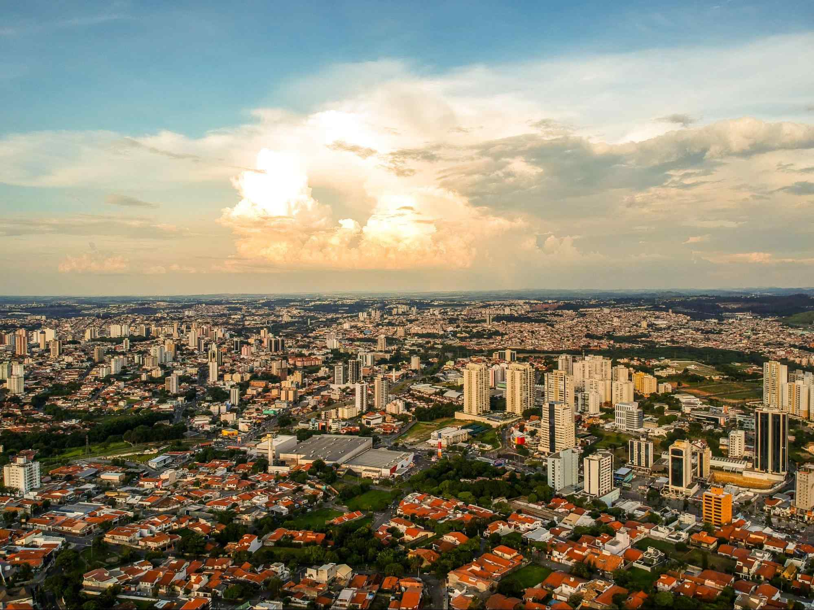

Sorocaba

Sorocaba é uma das maiores cidades do interior paulista e um importante polo de desenvolvimento econômico. Situada a cerca de 100 km da capital, a cidade possui mais de 700 mil habitantes e é reconhecida pela sua diversidade industrial, qualidade de vida e infraestrutura moderna.
Com tradição industrial desde o século XIX, Sorocaba foi inicialmente marcada pelo setor têxtil. Hoje, abriga indústrias automobilísticas, metalúrgicas, farmacêuticas e de tecnologia. Esse dinamismo faz da cidade um dos principais polos de negócios do estado de São Paulo.
Além da economia, Sorocaba investe em qualidade de vida, com parques, áreas verdes e forte atuação em mobilidade urbana e educação. Sua combinação de modernidade e tradição a torna um centro atrativo tanto para moradores quanto para visitantes.
Pontos Turísticos
- Parque Zoológico Municipal Quinzinho de Barros: Um dos zoológicos mais importantes da América Latina.
- Catedral Metropolitana de Sorocaba: Construída no século XVIII, é um dos principais marcos históricos da cidade.
- Jardim Botânico Irmãos Villas-Bôas: Espaço de preservação ambiental e lazer.
Gastronomia
- Comida Caipira: Tradição no interior paulista, com pratos como arroz carreteiro e feijão tropeiro.
- Doces Artesanais: Como o famoso doce de leite e compotas caseiras.
- Lanches: Sorocaba tem tradição em sanduíches e hambúrgueres artesanais.
Economia
- Indústria: Setores automobilístico, metalúrgico e farmacêutico são destaques.
- Tecnologia: A cidade investe em parques tecnológicos e inovação.
- Comércio e Serviços: Forte presença de shoppings, hospitais e universidades.
Curiosidades
- Cidade Têxtil: No século XIX, Sorocaba foi apelidada de “Manchester Paulista” por sua força no setor têxtil.
- Mobilidade Urbana: Foi uma das primeiras cidades brasileiras a implantar corredores exclusivos de ônibus.
- Cultura Tropeira: Sorocaba preserva tradições ligadas ao tropeirismo, importante na formação do interior paulista.